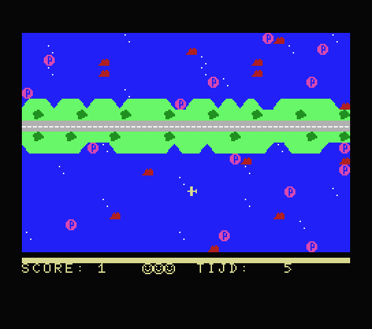

jer’s
THE BASIC YEARS · 1992—1994
MSX BASIC
Games
27 originele BASIC-games.
Speel op jouw favoriete MSX.
msxbasic.nl
↗
YOUR DESK. YOUR RULES.
● PAL / 50 Hz

PHILIPS
BRIGHT
⏻
EST. 1992 — GEWOON NOG EVEN SPELEN.